Case Study

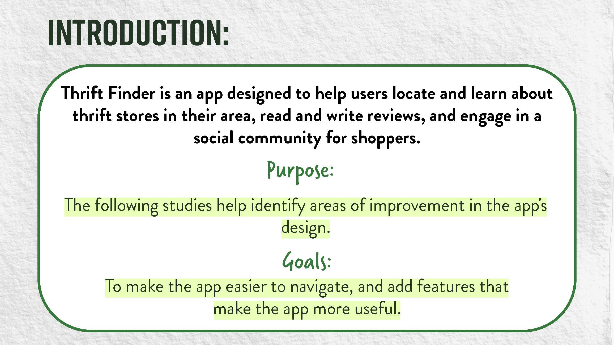
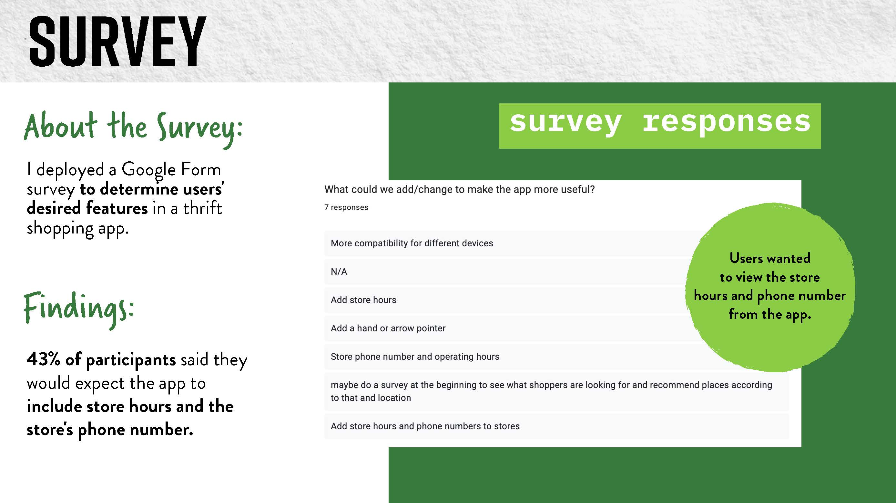
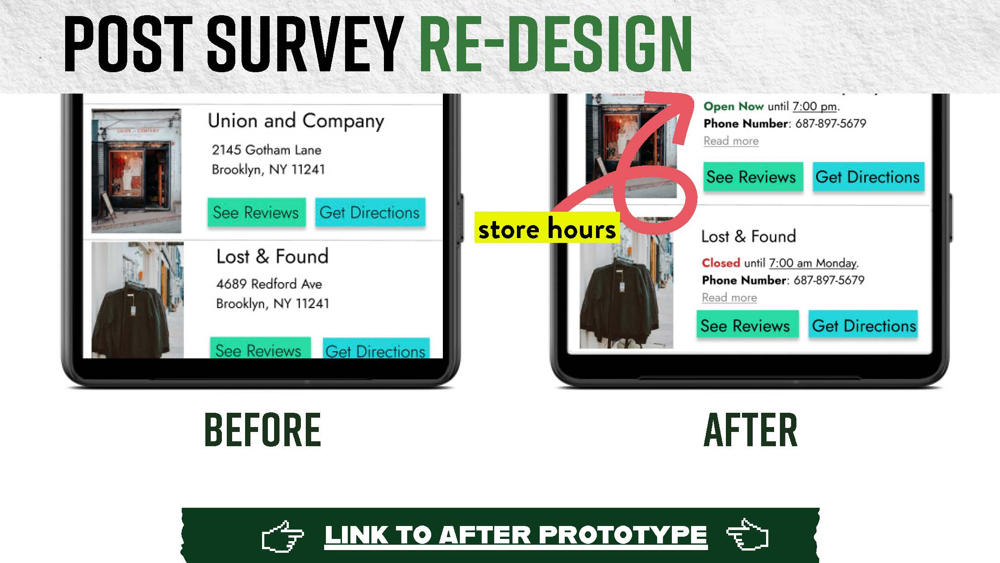
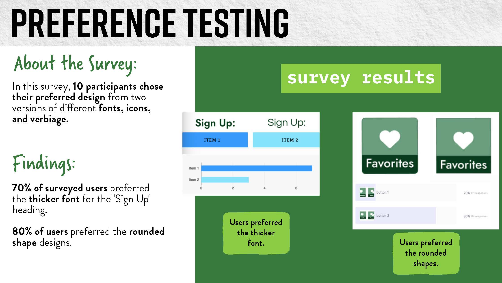
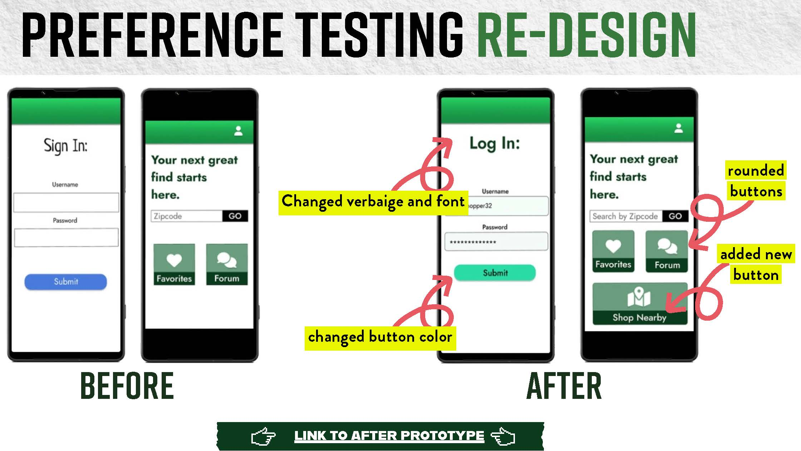
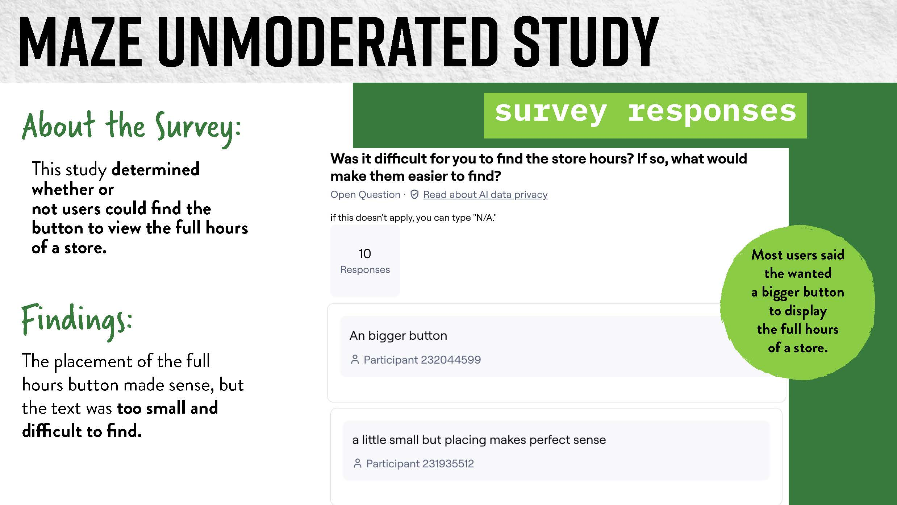
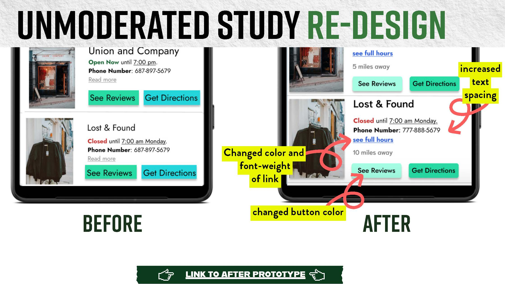
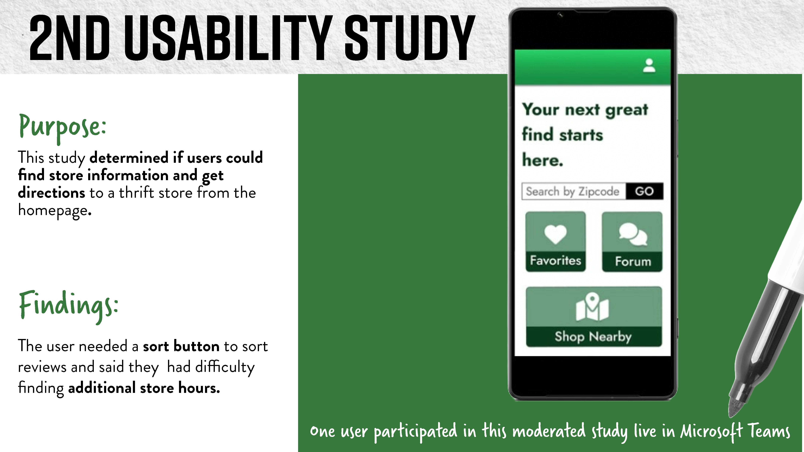
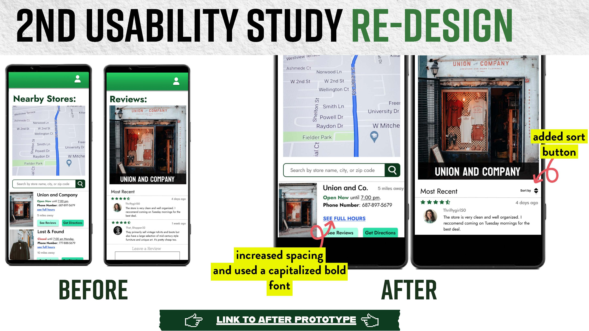
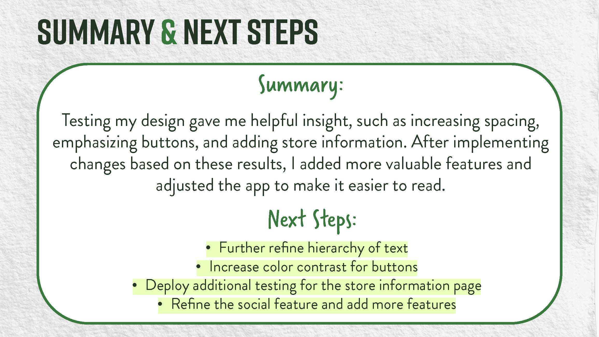
Thrift Finder is more than just a thrift shop locator—it's a community for thrift enthusiasts.
Designed to help users discover thrift shops and connect with like-minded individuals, the app combines a user-friendly interface with a social forum where users can share tips, post finds, and engage with others who share their passion for sustainable shopping.
Many users struggle to find thrift shops that align with their preferences and location. Additionally, there’s no centralized platform for thrift enthusiasts to connect, share tips, and inspire each other.
Create a platform that simplifies the search for thrift shops while fostering a sense of community through a dedicated forum for thrift lovers.
This wireframe outlines Thrift Finder’s key user journey, from account creation to exploring local thrift shops.
The flow prioritizes simplicity, community, and ease of discovery for thrift lovers.
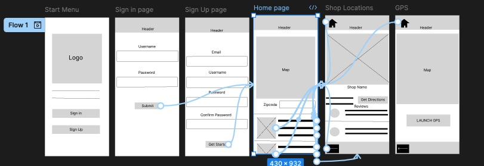
Designing Thrift Finder was a collaborative process, shaped by user feedback at every stage.
Testing revealed opportunities to improve navigation, enhance the forum experience, and make store details more accessible.










Click the link below to view the interactive prototype of Thrift Finder.
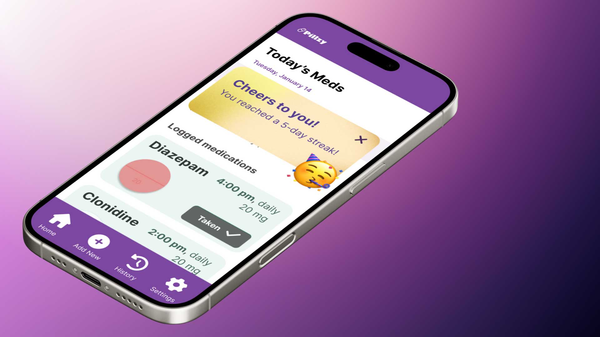
A medication management mobile app for users aged 18-24.
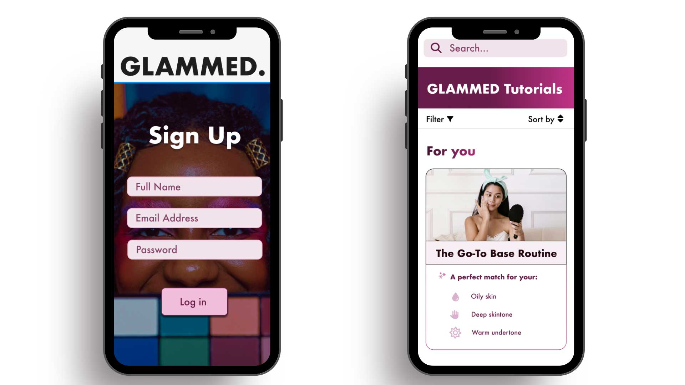
A tailored beauty tutorial experience.